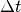

diary module¶
This module contains code that governs the activity-diaries. Each activity diary contains dataframes that store the activity-diaries for each person. The activity-diaries are the output of the Agent-Based Model of Human Activity Patterns (ABMHAP) simulation.
This module contains class diary.Diary.
-
class
diary.Diary(t, act, local)[source]¶ Bases:
objectThis class represents the activity-diaries for a person.
Parameters: - t (numpy.ndarray) – the start times for each activity [universal time, minutes]
- act (numpy.ndarray) – the activity code done at each time step [integer] (flattened array)
- local (numpy.ndarray) – the history of location codes done by a person
Variables: - colnames (list) – the column names for the activity diary in order
- df (pandas.core.frame.DataFrame) – the activity-diary
-
create_activity_diary(t, act, local)[source]¶ This function creates the activity diary for a given agent in the simulation.
The activity diary contains:
- the start-time and end-time for each activity
- the activity code
Parameters: - t (numpy.ndarray) – the simulation times [universal time, minutes]
- act (numpy.ndarray) – the activity code done at each time step [integer] (flattened array)
Returns: a tuple containing the following: the array indices for each activity grouping, the activity diaries in a numerical format, the activity diary in a string format, and the column names for each data type
Each diary is a tuple that contains the following:
- the day number of the start of the activity
- the (start-time, end-time) for the activity event
- the activity code for the activity event
- the location of the event
-
get_day_end(day_start, start, dt)[source]¶ This function gets the day that an activity ends.
Parameters: - day_start (numpy.ndarray) – the day an activity starts
- start (numpy.ndarray) – the time an activity starts [hours]
- dt (numpy.ndarray) – the duration for an activity [hours]
Returns: the day an activity ends
Return type: numpy.ndarray
-
get_weekday_data(df=None)[source]¶ This function pulls out data that only corresponds to the weekday data.
Parameters: df (pandas.core.frame.DataFrame) – the activity-diary of interest. If df is None, then use the dataframe associated with the diary object Returns: the activity-diary of data that occur on weekdays
-
get_weekday_idx(df=None)[source]¶ Get the indices of the data that occurs on weekdays. An activity is considered to be on the weekday if the activity ends on Monday - Friday.
Parameters: df (pandas.core.frame.DataFrame) – the activity-diary of interest. If df is None, then use the dataframe associated with the diary object Returns: boolean indices of which activities end during the weekend Return type: numpy.ndarray
-
get_weekend_data(df=None)[source]¶ This function pulls out data that only corresponds to the weekend data.
Parameters: df (pandas.core.frame.DataFrame) – the activity-diary of interest. If df is None, the use the dataframe associated with the current diary object Returns: an activity-diary of data that occurs on weekends
-
get_weekend_idx(df=None)[source]¶ Get the indices of the data that occurs on weekend. An activity is considered to be on the weekend if the activity ends on Saturday or Sunday.
Parameters: df (pandas.core.frame.DataFrame) – the activity-diary of interest. If df is None, then use the dataframe associated with the diary object Returns: boolean indices of which activities end during the weekend Return type: numpy.ndarray
-
group_activity(t, y)[source]¶ This function groups activities in chronological order.
Parameters: - t (numpy.ndarray) – the start time for activities
- y (numpy.ndarray) – the activity code that corresponds with the respective time
Returns: a list of each unique group-lists. Each group-list contains a tuple for (time step, activity code)
-
group_activity_indices(groups)[source]¶ This function returns the indices for each continuous activity in chronological order.
Note
The output is the time step number not the value of time
Parameters: groups (list) – a list of tuples of (time step, activity code) Returns:
-
group_activity_key(x)[source]¶ This is the key function used in groupby in order to group consecutive time-step-activity pairs. This is necessary for creating an activity diary.
Parameters: x (tuple) – the data in the form of ( index, (time step, activity code) ) Returns: the key for sorting ( , activity code) Return type: tuple
-
is_weekend(day)[source]¶ This function returns true if a day is in the weekend and false if it’s in a weekday.
Parameters: day (numpy.ndarray) – the day of the weekd Returns: boolean index of whether or not a day is in the weekend (True) or not (False) Return type: numpy.ndarray
-
same_day(start, dt)[source]¶ This function returns true if the activity starts and ends on the same day.
Parameters: - start (numpy.ndarray) – the time an activity starts [hours]
- dt (numpy.ndarray) – the duration of an activity,  [hours]
Returns: a boolean index of whether or not an activity started and ended on the same day
Return type: numpy.ndarray